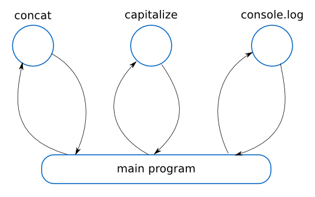
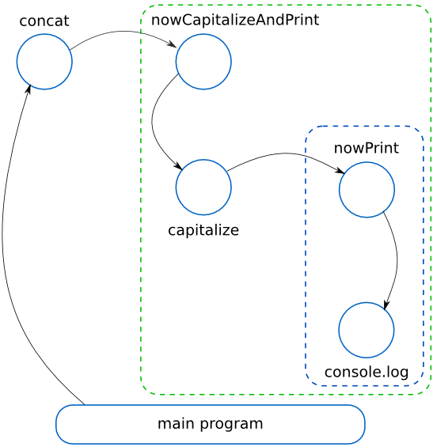

Continuation-Passing Style in
JavaScript
Return-based, classical style
function concat(x, y) {
return '' + x + y;
}
function capitalize(x) {
return x.toUpperCase();
}
var result = concat("Pi is exactly ", 3);
var capitalized = capitalize(result);
console.log(capitalized + '!');Flow is lineal, function nesting keeps low
Control is returned to the main program over and over after exiting a function
Continuation-Passing style
function concat(x, y, continuation) {
var result = '' + x + y;
continuation(result);
}
function capitalize(x, continuation) {
var result = x.toUpperCase();
continuation(result);
}
concat("Pi is exactly ", 3, function nowCapitalizeAndPrint (result) {
capitalize(result, function nowPrint (capitalized) {
console.log(capitalized + '!');
});
});Flow is chained, function nesting increases with each call
Control is explicitely defined as the continuation parameter
CPS is among us
CPS is here since Scheme age (1975)
- It is very common as intermediate representation for functional languages
- JavaScript callbacks are continuations
- Synchronization tools as Narrative JavaScript, IcedCoffeeScript or Step use CPS
Why callbacks are continuations?
function get(url, onsuccess, onerror) {
var xnr = new XMLHttpRequest();
xhr.open('GET', url, true); // send asynchronously!
xhr.send(null);
xhr.onreadystatechange = function () {
if (xhr.readyState !== 4)
return;
if (xhr.status === 200)
onsuccess(xhr.responseText);
else if (typeof onerror === 'function')
onerror(xhr.responseText);
}
}The get() function is written in CPS with two continuations, one in case of success and other in case of error
Wait a moment. What is a continuation?
- A continuation is an object that captures the current state of a program
- Easier: it is the work that remains to be done
- A common representation is a function
- I takes only one parameter with the result of previous computations
Do not confuse a
function in CPS with a continuation!
function get(url, continuation) { // <-- this is a function in CPS
// Do some async stuff
}function nowShow(result) { // <-- this is a continuation
console.log(JSON.stringify(result));
}get('http://calc.org/functions/', nowShow); // <-- this is call in CPS(Our) Constrains
Let's write CPS manually
- It is forbidden to use
returnexplicitely - The last parameter of a function is always its continuation
- Every function must end calling its continuation with the result of its computation
The Pyramid of Doom
Continuations could be annoying. Try converting this:
var a = 1, b = 4, c = 3;
console.log((a+Math.sqrt(b*b-4*a*c))/(2*a));into CPS...
// Suppose these operators
function add(x, y, cont) { cont(x+y); }
function mul(x, y, cont) { cont(x*y); }
function div(x, y, cont) { cont(x/y); }
function sqr(x, cont) { cont(Math.sqrt(x); }
// Compute acum = mul(b, b)
// Then compute acum2 = mul(-4, a)
// Then compute acum2 = mul(acum2, c)
// Then compute acum2 = add(acum, acum2)
// Then compute acum2 = sqr(acum2)
// Then compute acum2 = add(a, acum2)
// Then compute acum3 = mul(2, a)
// Then compute acum3 = div(acum2, acum3)
// Then console.log(acum3)Here it is the Pyramid of Doom
mul(b, b, function (acum) {
mul(-4, a, function (acum2) {
mul(acum2, c, function (acum2) {
add(acum, acum2, function (acum2) {
sqr(acum2, function (acum2) {
add(a, acum2, function (acum2) {
mul(2, a, function (acum3) {
div(acum2, acum3, function (acum3) {
console.log(acum3);
});
});
});
});
});
});
});
});But now suppose these alternative implementations...
function add(x, y, cont) {
get('http://calc.org/add/' + x + '/' + y, cont);
}
function mul(x, y, cont) {
get('http://calc.org/mul/' + x + '/' + y, cont);
}
function div(x, y, cont) {
get('http://calc.org/div/' + x + '/' + y, cont);
}
function sqr(x, cont) {
get('http://calc.org/sqr/' + x, cont);
}Now CPS allow us to compute the formula in the server, in an asynchronous fashion and without blocking the interface
Applications
How about supporting tail call optimization?
Or writing non-blocking tasks?
Even coordinating asynchronous functions?
Example I:
Tail call optimization
- Every function in CPS is a tail call
- Are you worried about producing a stack overflow?
- Do not! Use
setTimeoutto reset the stack!
This code produces an error in Firefox
function sum(n) {
if (!n)
return 0;
return n + sum(n-1);
}
console.log(sum(100000));
InternalError: too much recursionIts CPS form hangs Firefox console as well, :(
function sum(n, acum, continuation) {
if (!n)
continuation(acum);
else
sum(n-1, n+acum, continuation);
}
sum(100000, 0, console.log);
InternalError: too much recursionUse setTimeout()
var skip = 0;
function sum(n, acum, continuation) {
if (!n)
setTimeout(function () { continuation(acum); });
// Reset stack every 1000 calls
else if (skip++ % 1000 === 0)
setTimeout(function () { sum(n-1, n+acum, continuation); });
else
sum(n-1, n+acum, continuation);
}
sum(100000, 0, console.log);
5000050000setTimeout() forces the function to return clearing the call stack and scheduling the next call to be executed ASAP
Example II:
Non-blocking computations
- Another problem is not exhausting the stack
- But keeping the CPU busy performing computations
- Blocking the UI or the entire thread
Traversing a XXL website
Try this on:
http://www.whatwg.org/specs/web-apps/current-work/
A real pain to convert into CPS, x(
function traverse(node, f) {
// A- Call f on the node
f(node);
// B- Get the children
var children = node.childNodes;
for (var i=0, len=children.length; i<len; i++) {
traverse(children[i], f);
}
}Easy to convert in CPS, xP
var stats = {};
function histogram(node, continuation) {
if (node.nodeType === 3)
node.nodeValue.replace(/\w+/g, function(match) {
stats[match] = stats[match] ?
stats[match] + 1 : 1;
return match;
});
}A paradigmatyc example, x):
function show() {
var keys = Object.keys(stats);
for (var i=0; i < keys.length; i++) {
var key = keys[i];
console.log(key + ': ' + stats[key]);
}
}function show() {
var keys = Object.keys(stats);
var i = 0; // Initialization
while (i < keys.length) { // Condition
var key = keys[i];
console.log(key + ': ' + stats[key]);
i++; // Increment
} // Nothing more remains
}The invocation:
traverse(document.body, histogram);
show();Now into CPS...
The simplest one
var stats = {};
function histogram(node, continuation) {
if (node.nodeType === 3)
node.nodeValue.replace(/\w+/g, function(match) {
stats[match] = stats[match] ?
stats[match] + 1 : 1;
return match;
});
// Just call the continuation at the end
continuation();
}The paradygmatic example: a for loop
function show(continuation) {
function handleOne(i, keys, continuation) {
if (i < keys.length) { // Condition
var key = keys[i];
handleOne(i+1, keys, continuation); // Increment
}
else {
continuation(); // Continuation is what to do after
}
}
// --> STARTS HERE <--
handleOne(0, Object.keys(stats), continuation); // Initialization
}The tough guy: recursion
function traverse(node, f, continuation) {
f(node, function handleChildren() { // A- Call f on the node
var children = node.childNodes; // B- Get the children
function handleOne(i, len, continuation) {
if (i < len) // Condition
traverse(children[i], f, function handleNext() {
handleOne(i+1, len, continuation); // Increment
});
else
continuation(); // Continuation is what to do after
}
// --> STARTS HERE <--
handleOne(0, children.length, continuation) // Initialization
});
}The invocation
function end() {}
traverse(document.body, histogram, function () {
show(end);
});But this implementation introduce soo much recursion
So let's restart the stack...
var stats = {};
function histogram(node, continuation) {
if (node.nodeType === 3)
node.nodeValue.replace(/\w+/g, function(match) {
stats[match] = stats[match] ?
stats[match] + 1 : 1;
return match;
});
// Restart the stack every 400 nodes (give up for 10ms)
if ((histogram.skip++ % 400) === 0) {
console.log('400 nodes processed');
setTimeout(continuation, 10);
} else
continuation();
}
histogram.skip = 0;And allow other stuff to get control from time to time
function show(continuation) {
function handleOne(i, keys, continuation) {
if (i < keys.length) {
var key = keys[i];
console.log(key + ': ' + stats[key]);
// Stop processing for 1s (you can not read so fast)
if ((i % 20) === 0)
setTimeout(function() {
handleOne(i+1, keys, continuation);
}, 1000);
else
handleOne(i+1, keys, continuation);
} else {
continuation();
}
}
handleOne(0, Object.keys(stats), continuation);
}
Example III:
Synchronizing the asynchronous
- How to avoid Pyramid of Doom?
- Provide a
sync()function to flat the pyramid - Support with lazy evaluation of parameters
Proposed API
sync(
// Format: [function, param1, param2, ..., where to store result]
[get, 'http://mycompany.com/employees', 'result'],
[filterByFunction, result, 'developer', 'filtered'],
[show, filtered, '']
);
sync() takes several async functions to be synchronized
But be careful! result and filtered are both undefined at the time they are evaluated
Lazy evaluation:
Wrapping parameters
sync(
// Format: [function, "param1, param2, ...", where to store result]
[get, "'http://mycompany.com/employees'", 'result'],
[filterByFunction, "result, 'developer'", 'filtered'],
[show, "filtered", '']
);
Wrap list of parameters into a string
Now they are not evaluated, they are only text
Lazy evaluation:
Unwrapping parameters
To unwrap, build an array-like string...
var parameters_array = '[' + parameters_string + ']'...and safetly evaluate them using with and eval
with (some_namespace)
var parameters = eval(parameters_array);The sync() function
function sync() {
// Convert arguments into an array
var args = [].slice.call(arguments);
// Provide a namespace to store results
var namespace = {};
// next() computes the continuation
var f, parameters, store_name;
function next(result) {
// Functions remain so...
if (args.length) {
// Store the result of former one into the namespace
if (store_name)
namespace[store_name] = result;
// Take the next function
var tuple = args.shift();
f = tuple[0];
// Take parameters from the namespace
with (namespace)
parameters = eval('['+tuple[1]+']');
// Take where to store the next result
store_name = tuple[2];
// Add the continuation to the parameters of the function
parameters.push(next);
// Call the function
f.apply(null, parameters);
}
}
next();
}Let's flat that doomed pyramid...
sync(
[mul, "b, b", 'acum'],
[mul, "-4, a", 'acum2'],
[mul, "acum2, c", 'acum2'],
[add, "acum, acum2", 'acum2'],
[sqr, "acum2", 'acum2'],
[add, "a, acum2", 'acum2'],
[mul, "2, a", 'acum3'],
[div, "acum2, acum3", 'acum3'],
[console.log, "acum3", '']
);
Resources & further reading
- Carlos Leon (Thank for an entire month of deep though!)
- The little JavaScripter by Douglas Crockford
- Learning you some Erlang
- By example: Continuation-passing style in JavaScript by Matt Might
- Continuation-Passing Style by Marjin Haverbeke
- IcedCoffeeScript
- Narrative Javascript
- Step
I saw the term Pyramid of Doom for the first time in Why coroutines won't work on the web by Dave Herman
About me

- me
- Salvador de la Puente González
- @salvadelapuente
- My sites
- http://unoyunodiez.com
http://github.com/delapuente